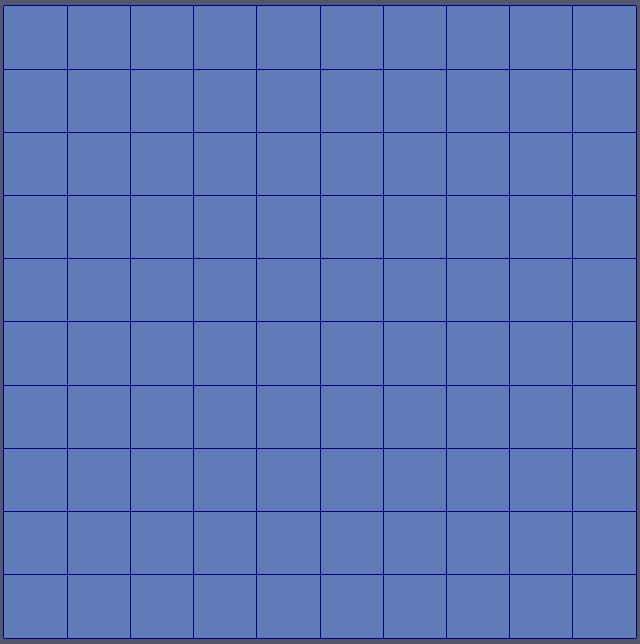

Discrete Nucleation

Nucleation system in action on a FeCuNi system. Clockwise from top left: Copper concentration, nickel concentration, nucleation penalty energy density, bulk free energy density.
The _discrete nucleation_ system allows users to incorporate nucleation phenomena in phase field simulations. Due to the lack of thermal fluctuations (also see Langevin Noise) nucleation phenomena are not intrinsic to the phase field method. We introduce nucleation by artificially triggering and stabilizing the formation of nuclei through local modifications of the free energy density or direct changes of an order parameter.
The system comprises user objects, a material class, a marker for mesh adaptivity, postprocessors, and an auxkernel:
DiscreteNucleationInserter- a user object that maintains a global list of currently active nucleus positions.DiscreteNucleationMap- a user object that maintains a smooth density map for nuclei locations (obtained from a DiscreteNucleationInserter).DiscreteNucleation- a material that calculates a local free energy penalty based on the difference of a set of given concentration variables and their target concentrations (using the data from the DiscreteNucleationMap).DiscreteNucleationMarker- a marker that triggers refinement at the point of nucleus insertion.DiscreteNucleationTimeStep- a postprocessor to provide a time step limit for new nuclei to use with IterationAdaptiveDT.DiscreteNucleationData- a postprocessor to provide diagnostic data on nucleation events.DiscreteNucleationAux - an auxkernel to map the
DiscreteNucleationMapto an auxvariable field.DiscreteNucleationForce - a kernel to map the
DiscreteNucleationMapto a variable field in combination with a Reaction kernel.
Nucleation approaches
All approaches require the use of an inserter, and a map user object. Advanced users may chose to derive their own userobjects from the provided classes to, for example, implement maps that realize different nucleus shapes than the smooth interface spheres provided by DiscreteNucleationMap.
Multiple options exist for applying the nucleus data to the variable fields in the simulation.
Free energy penalty based nucleation
The free energy penalty based approaches eschew directly modifying conserved concentration and non-conserved order parameter fields. Instead they bias the thermodynamics of the system in a way that drives the formation of nuclei at the locations provided by the discrete nucleation system. Simply stated the local free energy density is modified to make the nucleated state a lower energy state. This causes solute to diffuse toward the nucleation site (in the conserved case) and brings about a change in a non-conserved order parameter field. Moose provides the DiscreteNucleation material, which implements a simple harmonic form of such a penalty, but advanced users are free to implement their own free energy modifications following the example set in this material.
Conserved order parameters
Use a DerivativeSumMaterial to add the nucleation free energy penalty to the physical free energy contributions of the system (which is utilized by a Cahn-Hilliard kernel).
Non-Conserved order parameters
Use either a DerivativeSumMaterial to add the nucleation free energy penalty to the physical free energy contributions of the system, or add an additional AllenCahn kernel using only the nucleation penalty energy to the variable influenced by the nucleation process. The latter approach also works for hardcoded free energies that do not utilize the Function Material approach.
Direct order parameter modification
In some cases, such as polycrystalline models used in conjunction with grain tracker, direct modification of non-conserved order parameters can be a feasible approach.
Nucleation of new grains in a polycrystalline model with GrainTracker requires the use of reserved (or staging) order parameters (order parameters which the grain tracker detects new grains in, but never uses as a target for remapping) in which new grain nuclei can be inserted and successively get picked up and remapped onto the evolving order parameters.
Apply both a DiscreteNucleationForce and a Reaction kernel to a reserved order parameter and set the hold_time in the inserter to 0. This will cause the modification of the reserved OP during only a single timestep, which will be enough for the GrainTracker to pick up and remap the new nucleus.
Advanced subjects

Targeted mesh refinement prior to nucleus insertion.
The use of mesh and timestep adaptivity is supported through the DiscreteNucleationMarker and DiscreteNucleationTimeStep objects.